AGRADECIMENTOS
Na realização deste trabalho, foram consultadas diversas fontes, das quais vamos destacar algumas mais importantes: Coleção da Abril Cultural, "GRANDES PERSONAGENS DA NOSSA HISTÓRIA", editado em 1969; imagens e textos do Museu Anchieta e do Santuário do Beato, na cidade de Anchieta, no Estado do Espírito Santo:
http://www.museuanchieta.com.br/index.html
Colhemos ainda, informações no Projeto da Casa Anchieta:
http://www.odiariodebarretos.com.br/www1/anchieta/sobre.htm
E também, no "CANAN" - Associação pró-Canonização do Beato Padre José de Anchieta:
E por último, consultamos as "Cartas Jesuíticas", resumo do "Processo de Beatificação", as revistas "Mensageiro do Coração de Jesus" e o livreto "JOSÉ DE ANCHIETA, O SANTO QUE AMOU O BRASIL", editado pela Associação Católica Nossa Senhora de Fátima, que nos foi enviado por atenciosa gentileza do Padre Lourenço Ferronatto.
A todas as fontes utilizadas, os nossos penhorados e sinceros agradecimentos, porque no conjunto, se constituíram em preciosos elementos, que nos ajudaram verdadeiramente a desenhar um retrato bem real, do nosso querido e estimado BEATO PADRE JOSÉ DE ANCHIETA, para que ele possa ser mais conhecido e o valor de sua obra apreciado por todos aqueles que amam o BRASIL, da mesma forma que ele soube amar.
SUGESTÃO
Se fizer uma promessa e alcançar a graça de DEUS, pela intercessão do Beato Padre José de Anchieta, poderá num gesto carinhoso de retribuição, escrever descrevendo o fato a POSTULAÇÃO DA CAUSA DE CANONIZAÇÃO DO BEATO, em São Paulo, ao senhor Padre Armênio Rodrigues Nogueira, Museu de Arte Sacra de São Paulo, Avenida Tiradentes, 676, CEP = 01.102-000 São Paulo (Capital). E-mail: contato@apostoladosagradoscoracoes.com.br
CONVITE
Visite o PORTAL do APOSTOLADO DOS SAGRADOS CORAÇÕES . Nele encontrará todos os Sites que construímos com muito amor e devoção, fundamentados na Sagrada Escritura, na Tradição Cristã, nas Manifestações Sobrenaturais e na Vida e Obra dos Santos. Grande variedade de assuntos: NOSSA SENHORA DA CONCEIÇÃO APARECIDA; A IMACULADA CONCEIÇÃO (Revelação Divina); NOSSA SENHORA DE NAJU (Impressionantes Milagres Eucarísticos); O MISTÉRIO DE DEUS; JESUS DE NAZARÉ (O Rei dos Reis); ADORÁVEL E MISTERIOSO ESPÍRITO SANTO; A VIDA DE NOSSA SENHORA; OS ANJOS DO SENHOR; A VIDA ADMIRÁVEL DE SÃO JOSÉ; SÃO JUDAS TADEU (Causas Impossíveis); NOSSA SENHORA DE FÁTIMA e muitos outros, levando a Verdade Cristã à todos os corações de boa vontade.
http://www.apostoladosagradoscoracoes.com.br/

"E-MAIL"
Para se comunicar conosco, favor clicar na imagem a seguir:


FOTOGRAFIAS
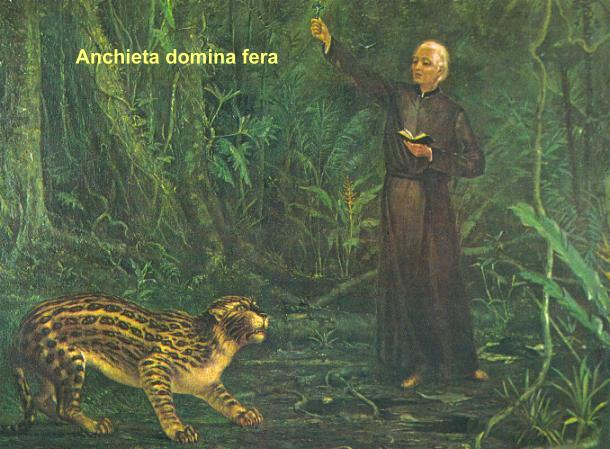
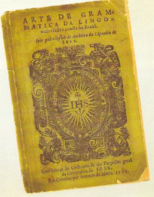
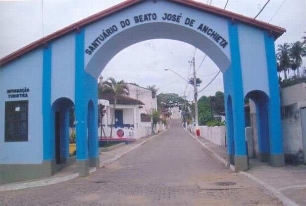
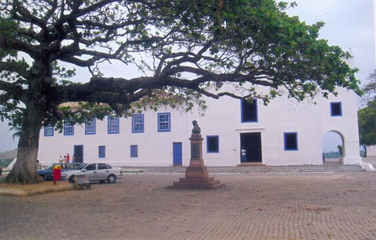
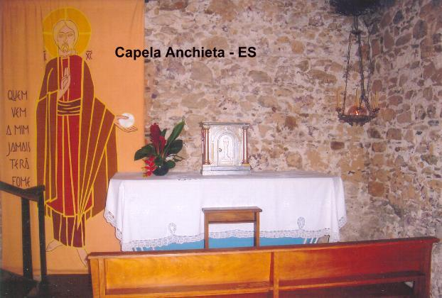
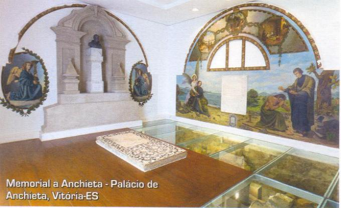
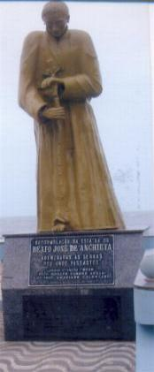
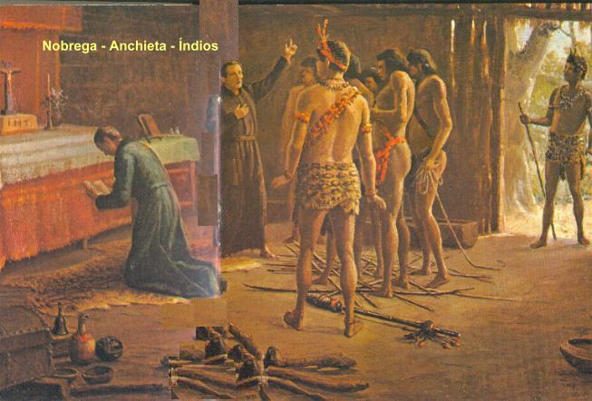
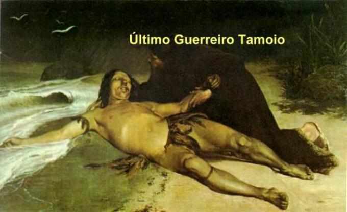
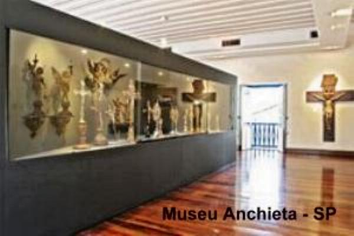
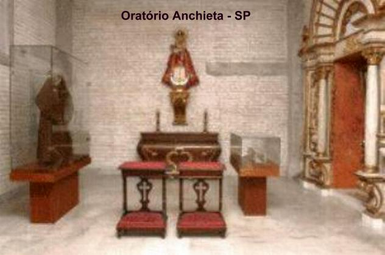

FIRMAS DE BUSCAS


 Retorna
ao PORTAL DO APOSTOLADO
Retorna
ao PORTAL DO APOSTOLADO